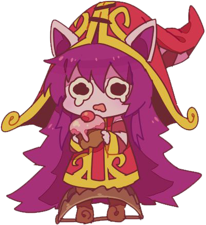

O 'anão irritante' é conhecida por conjurar ilusões de sonhos e criaturas
fantasiosas enquanto vaga por Runeterra com seu companheiro, Pix, ou pelo
menos é o que a pagina de jogos específica sobre esse campeão meia boca. lulu
a criatura que não foi aceita nem no céu nem no inferno e atualmente um dos champs
mais odiados de league of legends perdendo apenas para shaco e soraka. De acordo
alguns jogadores 'LULU=ODIO' e...